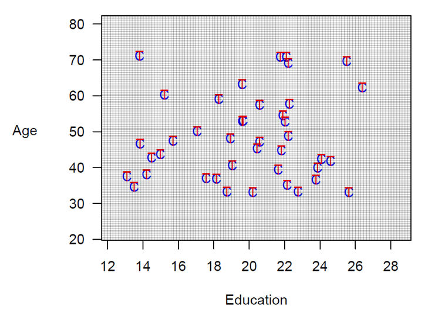
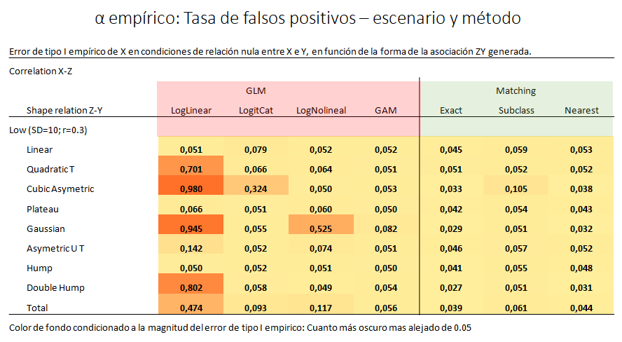

Métodos de emparejamiento (Matching)
En grandes bases de datos
Jordi Real
jreal@idiapjgol.info
IDIAP- Jordi Gol
USR-BCN. Grup DAP-Cat
Métodos de Matching
Jordi Real - 2022
Guión
¿Por qué? ¿Como? ¿Cuándo?
Introducción
- Confusión
- Métodos de ajuste
- Comparativa
Métodos de matching
- Proceso
- Distancias, algoritmos y Validación
- Herramientas y grados de libertad
Conclusiones / Resumen
- Cuándo aplicarlo
- Resumen
Introducción
Aspecto más importante de una investigación?
Introducción
Estudio CVD-Real

Introducción
Estudio CVD-Real Catalonia
Introducción
Estudio Cuidadores
Ejemplo
Estudio Cuidadores
Método:
- ENSE: Encuesta nacional de salud española. 20.000 hogares
- Se identificó 515 personas en situación de cuidador informal (superior al año)
- Resultados en Salud: Diagnostico depresión, Ansiedad, Calidad de vida, Estado de salud percibido, soporte social
Ejemplo
Enfoque analítico básico
- P(Depresion / Cuidador) = 16% (n=515)
- P(Depresión / Resto) = 8.4% (n=19.500)
- Medida de asociación : OR = 2.03 (CI95: 1.7 - 2.5)
Introducción
Preguntas
- Puedo comparar resultados en salud de los 515 cuidadores con el resto 19.514 no cuidadores?
- Son comparables?
- Veamos la diferencia en edad entre los cuidadores versus los no-cuidadores
- Los cuidadores 7.3 años mayores que los no cuidadores
Sesgo de confusión
Sesgo de confusión
Habitual en estudios observacionales
Confusión: “mezcla” o “difuminación” de efectos
Se trata de relacionar una exposición a un resultado
En realidad mide el efecto de un tercer factor (la variable de confusión)
Distorsiona la medida de la asociación entre otras dos variables
El resultado en presencia de una variable de confusión puede ser la observación de:
- Efecto donde en realidad no existe (Asociación espuria)
- Exageración o atenuació d’una asociación real (confusión positiva)
- Inversión del sentido de una asociación real (confusión negativa)
Métodos de ajuste
Restricción (Diseño)
Anticipación de confusores potenciales (Diseño)
Estratificación por confusor/es (Análisis):
Simple
Difícil con muchas covariables
Técnicas de estandarización (Análisis)
Métodos de regresión (Ajuste por covarianza) (Análisis)
Mayor potencia estadística
Técnico
Asunciones de modelos
Modelos de regressión
Asunciones sobre modelos
Modelos de regressión
Asunciones sobre modelos de regressión
Modelos de regressión
Asunciones sobre modelos de regression
Modelos de regressión
Asunciones sobre modelos de regression
Reviewer #2: (27/09/2023) The paper is beautifully written and considers an important topic. Since this is a modelling study, including additional details on the models is necessary. My detailed comments follow.
- For the univariate and multivariate (presumably multivariable) analyses mentioned on page 5, line 14 (or 28 with the journal’s numbering), please specify what kind of models were used, e.g. Poisson, Cox etc.
- Please briefly describe what model assumption and goodness of fit checks were performed, and what the findings were (you could include details in supplementary material).
- There are many variables included in the multivariable analyses - how were these selected, and what checks for collinearity were performed?
Ajuste por regressión
Estudio cuidadores. Enfoque multivariable
Ajuste multivariable mediante regressión logística
- Tener en cuenta la edad y otros factores asociados1
- Medida de asociación no ajustada: OR= 2.03 (IC95%: 1.7 - 2.5)
- Medida de asociación ajustada: OR= 1.56 (IC95%: 1.21 - 2.04)
Métodos de ajuste
Restricción (Diseño)
Anticipación de confusores potenciales (Diseño)
Estratificación por confusor/es (Análisis):
Simple
Difícil con muchas covariables
Técnicas de estandarización (Análisis)
Métodos de regresión (Ajuste por covarianza) (Análisis)
Mayor potencia estadística
Técnico
Asunciones de modelos
- Matching (Diseño / Análisis)
Matching
En que consiste?
Dada N, encontrar n (n<N), tal que los grupos sean de igual o de similares características
Matching
En que consiste?
Dada N, encontrar n (n<N), tal que los grupos sean de igual o de similares características
Estudio cuidadores
Comparativa entre métodos
- Medida de asociación no ajustada: OR= 2,03 (IC95%: 1,7 - 2,5)
- Medida de asociación ajustada según regressión: OR= 1,56 (IC95%: 1,21 - 2,04)
- Medida de asociación según método de matching: OR = 1,34 (IC95%: 1,02 - 1,76)
¿Por que?
La prueba del algodón. Estudio de simulación
Objetivo: Comparar la corrección del sesgo de confusión entre distintas aproximaciones mediante un estudio de simulación
En una situación controlada donde conocemos la realidad
Generamos 7500 muestras simuladas de tamaño grande (n=10.000) tal que:
Estudio de simulación
- Distintos escenarios donde la Relación confusor Z vs P(Y):
Estudio de simulación
Estudio de simulación
Distintas aproximaciones para estimar el efecto de X sobre Y
| Descripción | Método |
|---|---|
| 1. Z Lineal (LogLineal) | Regresión |
| 2. Categorizando Z En quintiles (LogitCat) | Regresión |
| 3. Fuciones polinómicas Z^3 (LogNoLineal) | Regresión |
| 4. Función no paramétrica s(Z) (GAM) | Regresión |
| 5. Exacto | Matching exacto |
| 6. Subclasificación con descartes | Matching |
| 7. Nearest- Neighbour | Matching N-N |
Estudio de simulación
Resultados escenario Lineal
Estimación de efecto nulo (OR=1) según el método de ajuste
Estudio de simulación
Resultados escenario No Lineal
Estimación de efecto nulo (OR=1) según el método de ajuste
Estudio de simulación
Resultados escenario No lineal
Estimación de efecto nulo (OR=1) según el método de ajuste
Estudio de simulación
Error de tipo I empirico según escenario y método
Estudio de simulación
Tasa de falsos positivos según escenario y método
¿Por qué fallan algunos modelos?
Tipos de matching
- Matching aproximado por frequencia (según una distancia)
- Matching exacto por frequencia
- Matching individual por densidad de incidencia
Etapas del matching
4 fases
Donde las tres primeras representan la fase de “diseño” y la última la de “análisis”
Distancia
- Definición de la medida de proximidad o cercanía utilizada para determinar si dos observaciones son buenos pares.
Algoritmo
- Aplicación del algoritmo para la elección de observaciones y conformación de nuevos grupos, en base a la medida de proximidad elegida.
Validación
- Evaluación del equilibrio (calidad del matching) de los grupos emparejados. Si la calidad del matching no se satisface se repiten las etapas 1 y 2 hasta que los grupos puedan considerarse coincidentes.
Análisis
Distancias
Métodos para calcular distancias de covariables

Distancias
Cual és la reina de las distancias?

\(P(X)=Probabilidad(X=1/Z) = f(Z)\)
\(Pr(Xi/Zi)=\frac{e^{g(Zi)} }{1+ e^{g(Zi)}}\)
Algoritmos de agrupación
- Exacto
Empareja cada unidad tratada con todas las posibles unidades del grupo control de manera que ambos grupos contengan exactamente los mismos valores según las covariables especificadas. Cuándo hay muchas covariables y/o las covariables pueden tomar un amplio rango de valores, exact matching puede no ser posible.- Nearest Neighbour (N-N)
Mejores controles emparejados para cada individuo tratado. Observaciones del grupo control lo más cercana a tratada según la distancia especificada. Misma distancia se selecciona aleatoriamente a uno de estos. La opción caliper (número de desviaciones estándar de la medida de la distancia) establece una distancia máxima entre grupos para ser seleccionados asegurando una igualdad mínima entre observaciones.- Subclassification (Subclas)
Algoritmo que forma estratos, en función de la distribución de las distancias estimadas de tal manera que asegura la igualdad de distribuciones dentro de cada estrato según las covariables seleccionadas. Se pueden descartar observaciones para mejorar la igualdad de distribuciones dentro de cada estrato.- Otros métodos (Optimal, Full, Genetic etc..)
Validación
Evaluación del equilibrio (calidad del matching) de los grupos emparejados. Si la calidad del matching no se satisface se repiten las etapas 1 y 2 hasta que los grupos puedan considerarse coincidentes

Validación
Estudio cuidadores
Diferencias medias estandarizadas (SMD) por covariable. Se recomienda un SMD<0.1.

Validación
Evaluación de la calidad del equilibrio de las covariables basales después del matching
Como?
Herramientas y grados de libertad
Software: Stata, R, SAS
Ratio de los grupos (1:1 hasta 1:4)
Distancia utilizada (PS, mahalanobis, euclidiana)
Algoritmo de agrupación (N-N, Exacto, óptimo, genético …..)
Descartes
Variables
Variables
Potenciales confusoras segun conocimiento previo
Número?
- No hay límite. Cuantas más, más difícil encontrar buenos gruposNo: outcomes secundarios, ni variables subrogadas

Herramientas
Paquete {Matchit} de R (version 4.4.0)
Matching for Causal Inference
Descripción
matchit() is the main function of MatchIt and performs pairing, subset selection, and subclassification with the aim of creating treatment and control groups balanced on included covariates. MatchIt implements the suggestions of Ho, Imai, King, and Stuart (2007) for improving parametric statistical models by preprocessing data with nonparametric matching methods. MatchIt implements a wide range of sophisticated matching methods, making it possible to greatly reduce the dependence of causal inferences on hard-to-justify, but commonly made, statistical modeling assumptions. The software also easily fits into existing research practices since, after preprocessing with MatchIt, researchers can use whatever parametric model they would have used without MatchIt, but produce inferences with substantially more robustness and less sensitivity to modeling assumptions.
Función:
matchit(formula, data = NULL, method = “nearest”, distance = “glm”, link = “logit”, distance.options = list(), estimand = “ATT”, exact = NULL, mahvars = NULL, antiexact = NULL, discard = “none”, reestimate = FALSE, s.weights = NULL, replace = FALSE, m.order = NULL, caliper = NULL, std.caliper = TRUE, ratio = 1, verbose = FALSE, …)
MatchIt
Ejemplo
| 0 | 1 | |
|---|---|---|
| N=429 | N=185 | |
| age | 28.0 (10.8) | 25.8 (7.16) |
| educ | 10.2 (2.86) | 10.3 (2.01) |
| race: | ||
| black | 87 (20.3%) | 156 (84.3%) |
| hispan | 61 (14.2%) | 11 (5.95%) |
| white | 281 (65.5%) | 18 (9.73%) |
| nodegree | 0.60 (0.49) | 0.71 (0.46) |
| married | 0.51 (0.50) | 0.19 (0.39) |
| re74 | 5619 (6789) | 2096 (4887) |
| re75 | 2466 (3292) | 1532 (3219) |
MatchIt
Ejemplo
| 0 | 1 | p.overall | |
|---|---|---|---|
| N=429 | N=185 | ||
| age | 28.0 (10.8) | 25.8 (7.16) | 0.003 |
| educ | 10.2 (2.86) | 10.3 (2.01) | 0.585 |
| race: | <0.001 | ||
| black | 87 (20.3%) | 156 (84.3%) | |
| hispan | 61 (14.2%) | 11 (5.95%) | |
| white | 281 (65.5%) | 18 (9.73%) | |
| nodegree | 0.60 (0.49) | 0.71 (0.46) | 0.007 |
| married | 0.51 (0.50) | 0.19 (0.39) | <0.001 |
| re74 | 5619 (6789) | 2096 (4887) | <0.001 |
| re75 | 2466 (3292) | 1532 (3219) | 0.001 |
MatchIt
Paquete MatchIt de R (version 4.4.0)
MatchIt
Paquete MatchIt de R (version 4.4.0)
A matchit object
- method: 1:1 nearest neighbor matching without replacement
- distance: Propensity score [caliper, common support]
- estimated with logistic regression
- caliper: <distance> (0.029)
- common support: units from both groups dropped
- number of obs.: 614 (original), 212 (matched)
- target estimand: ATT
- covariates: age, educ, race, nodegree, married, re74, re75 Control Treated
All (ESS) 429 185
All 429 185
Matched (ESS) 106 106
Matched 106 106
Unmatched 266 71
Discarded 57 8MatchIt
Validación
| 0 | 1 | |
|---|---|---|
| N=106 | N=106 | |
| age | 25.3 (10.2) | 26.1 (6.87) |
| educ | 10.4 (2.78) | 10.4 (2.06) |
| race: | ||
| black | 77 (72.6%) | 77 (72.6%) |
| hispan | 11 (10.4%) | 11 (10.4%) |
| white | 18 (17.0%) | 18 (17.0%) |
| nodegree | 0.62 (0.49) | 0.65 (0.48) |
| married | 0.20 (0.40) | 0.20 (0.40) |
| re74 | 2578 (4476) | 2139 (4137) |
| re75 | 1739 (2882) | 1707 (3788) |
MatchIt
Validación
| 0 | 1 | p.overall | |
|---|---|---|---|
| N=106 | N=106 | ||
| age | 25.3 (10.2) | 26.1 (6.87) | 0.509 |
| educ | 10.4 (2.78) | 10.4 (2.06) | 0.911 |
| race: | 1.000 | ||
| black | 77 (72.6%) | 77 (72.6%) | |
| hispan | 11 (10.4%) | 11 (10.4%) | |
| white | 18 (17.0%) | 18 (17.0%) | |
| nodegree | 0.62 (0.49) | 0.65 (0.48) | 0.670 |
| married | 0.20 (0.40) | 0.20 (0.40) | 1.000 |
| re74 | 2578 (4476) | 2139 (4137) | 0.459 |
| re75 | 1739 (2882) | 1707 (3788) | 0.945 |
MatchIt
Validación

Muestreo por densidad de incidencia
Matching individual/exacto
Apareamiento por densidad de incidencia
- Diseño: Caso-control anidado / Cohorte dinámica (o abierta)
- Los controles se seleccionan a medida que se producen los casos (Matching on time)
- Se construyen conjuntos de riesgo emparejados
- Los controles pueden ser remuestrados(más de una vez por caso)
- Los controles se pueden convertir en casos
Muestreo por densidad de incidencia
Muestreo por densidad de incidencia
Muestreo por densidad de incidencia
Ejemplo: Cohorte dinámica
library(Macedonia)
dat2<-Macedonia::match_density_incidence(dt=Macedonia::dat,
id="idp",
llistaPS=c("sex"),
eventcontrol=TRUE,
reemplacement=FALSE,
numcores=NA,
Ncontrols=1,
seed=123)
dat$idp %>% length()[1] 55[1] 18dat2 %>% head() %>% select(-c(diabetes,heartdis,byear)) %>% kableExtra::kable() %>%
kableExtra::kable_classic_2() %>% kableExtra::kable_styling(font_size = 15)| idp | .caseid | .dtindex | .event | .n | event | sex | dtindex_case | dtindex_control |
|---|---|---|---|---|---|---|---|---|
| P41 | 1 | 5 | 1 | 1 | 1 | fem | 5 | NA |
| P20 | 1 | 5 | 0 | 1 | 0 | fem | NA | 20 |
| P42 | 2 | 8 | 1 | 1 | 1 | fem | 8 | NA |
| P13 | 2 | 8 | 0 | 1 | 0 | fem | NA | 13 |
| P43 | 3 | 11 | 1 | 1 | 1 | fem | 11 | NA |
| P19 | 3 | 11 | 0 | 1 | 0 | fem | NA | 19 |
Muestreo por densidad de incidencia
Ejemplo: Caso-Control
dades<-readRDS("dades_setMatch.Rds")
# data de censura en els casos com a molt la data de CAS
dades<-dades %>% mutate(dtindex_control=ifelse(event==1,dtindex_case,dtindex_control))
llistaPS<-c("sexe","year_DM2","year_naix")
dt_aparellada<-match_density_incidence(dades,
id="id",
llistaPS=llistaPS,
eventcontrol = T,
reemplacement=F,
Ncontrols = 10,
seed=131)
dades %>% n_distinct("id")[1] 400[1] 30dt_aparellada %>% select(id,.caseid,.dtindex,.event,.n,Fecha_caso=dat_cas,llistaPS) %>%
mutate(.dtindex=lubridate::as_date(.dtindex)) %>%
head(5) %>% kableExtra::kable() %>% kableExtra::kable_classic() %>% kableExtra::kable_styling(font_size = 15)| id | .caseid | .dtindex | .event | .n | Fecha_caso | sexe | year_DM2 | year_naix |
|---|---|---|---|---|---|---|---|---|
| 299 | 1 | 2012-09-13 | 1 | 2 | 2012-09-13 | D | 2004 | 1929 |
| 214 | 1 | 2012-09-13 | 0 | 2 | 2017-06-15 | D | 2004 | 1929 |
| 35 | 1 | 2012-09-13 | 0 | 2 | NA | D | 2004 | 1929 |
| 400 | 3 | 2013-04-11 | 1 | 1 | 2013-04-11 | D | 2004 | 1931 |
| 226 | 3 | 2013-04-11 | 0 | 1 | NA | D | 2004 | 1931 |
¿Cuándo No?
Muestras insuficientes (“pequeñas”)
Objetivos
Descriptivos
- Multivariantes: Clustering, PCA, factorialEstimar parámetros poblacionales (ej.prevalencia)
Predictivos
Múltiples hipótesis / objetivos
¿Cuándo No?
Hipótesis / objetivos múltiples
¿Cuándo Sí?
Objetivos analíticos confirmatorios
Inferencia causal
Diseños
- Transversal/Cohortes /Caso-control
Variable principal (X o Y) de agrupación de naturaleza categórica (preferentemente binaria)1
Estudio comparativo aislando factores ya conocidos
Para concluir…
Razones
Simplicidad
Facilidad de evaluar su viabilidad
Evaluar grado de solapamiento
Conclusiones contextuales
Para concluir…
Modelos paramétricos funcionan, pero …..
Modelos semiparamétricos funcionan mejor
Robustez de los métodos Matching
Analisis dirigido a un objetivo concreto
Separan el diseño del análisis
- El outcome es invisible al investigador
Conclusiones
Conclusiones
Sesgo de confirmación

Muchas grácias
Último MEME
Bibliografía
Rosenbaum, P.R. and D.B. Rubin (1983), “The Central Role of the Propensity Score in Observational Studies for Causal Effects”, Biometrika 70, 1, 41–55.
Ho DE, Imai K, King G, Stuart EA. Matching as nonparametric preprocessing for reducing model dependence in parametric causal inference. Political analysis 2007;15(3):199-236.
Martens EP, Pestman WR, de Boer A, Belitser SV, Klungel OH. Systematic differences in treatment effect estimates between propensity score methods and logistic regression. Int J Epidemiol 2008 Oct;37(5):1142-1147.
Kurth T, Walker AM, Glynn RJ, Chan KA, Gaziano JM, Berger K, et al. Results of multivariable logistic regression, propensity matching, propensity adjustment, and propensity-based weighting under conditions of nonuniform effect. Am J Epidemiol 2006 Feb 1;163(3):262-270.
Austin PC. The performance of different propensity score methods for estimating marginal odds ratios. Stat Med 2007;26(16):3078-3094.
Stuart EA. Matching methods for causal inference: A review and a look forward. Stat Sci 2010 Feb 1;25(1):1-21.
King G, Nielsen R, Coberley C, Pope JE, Wells A. Comparative effectiveness of matching methods for causal inference. Unpublished manuscript 2011;15.
King G, Nielsen R. Why propensity scores should not be used for matching. Copy at http://j.mp/1sexgVw Download Citation BibTex Tagged XML Download Paper 2016;378.
King G, Lucas C, Nielsen R, King G, Pan J, Roberts M, et al. The Balance-Sample Size Frontier in Matching Methods for Causal Inference}. PS: Political Science and Politics} 2014;42:S11-S22. Pearce N. Analysis of matched case-control studies. BMJ 2016 Feb 25;352:i969
Real J, Forné C, Roso-Llorach A, Martínez-Sánchez JM. Quality Reporting of Multivariable Regression Models in Observational Studies: Review of a Representative Sample of Articles Published in Biomedical Journals. Medicine (Baltimore). 2016 May;95(20)
González-de Paz L, Real J, Borrás-Santos A, Martínez-Sánchez JM, Rodrigo-Baños V, Dolores Navarro-Rubio M. Associations between informal care, disease, and risk factors: A Spanish country-wide population-based study. J Public Health Policy. 2016 May;37(2):173-89. doi: 10.1057/jphp.2016.3. Epub 2016 Feb 11. PubMed PMID: 26865318.
Altman DG, Royston P. The cost of dichotomising continuous variables. BMJ. 2006 May 6;332(7549):1080. doi: 10.1136/bmj.332.7549.1080. PMID: 16675816; PMCID: PMC1458573.
Material extra
Métodos de Matching en estudios retrospectivos